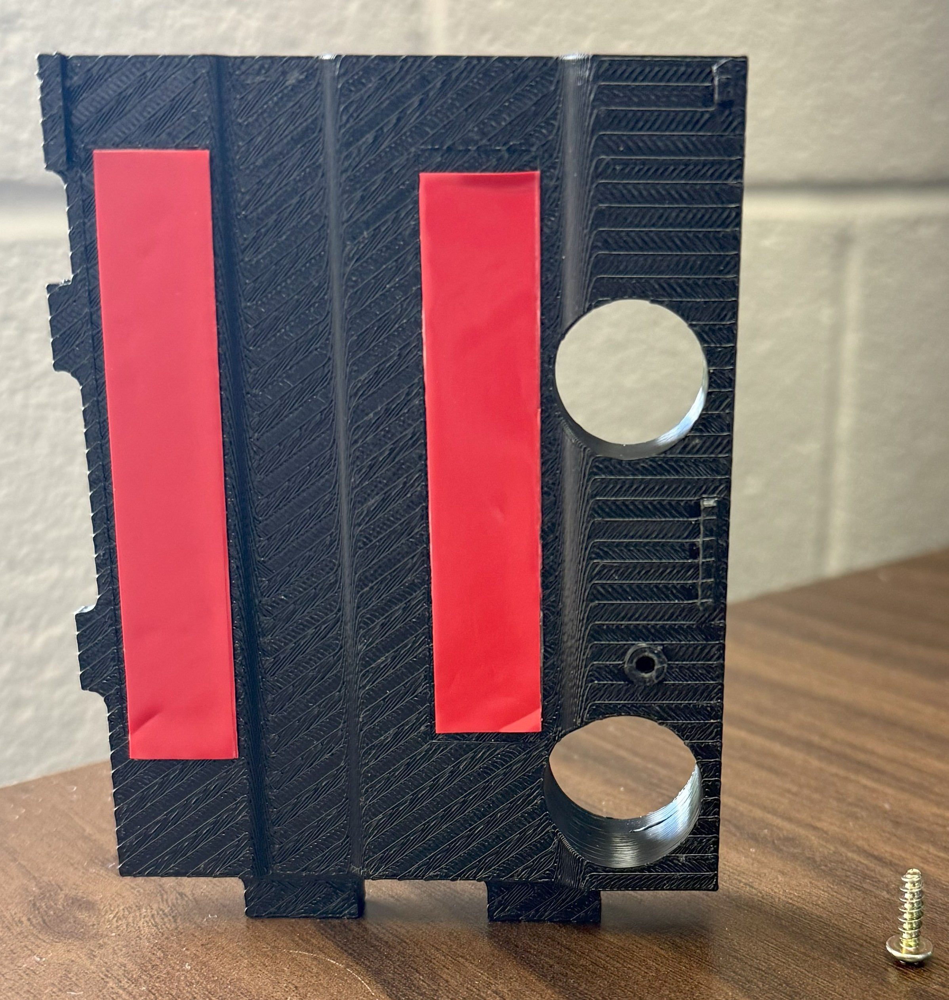
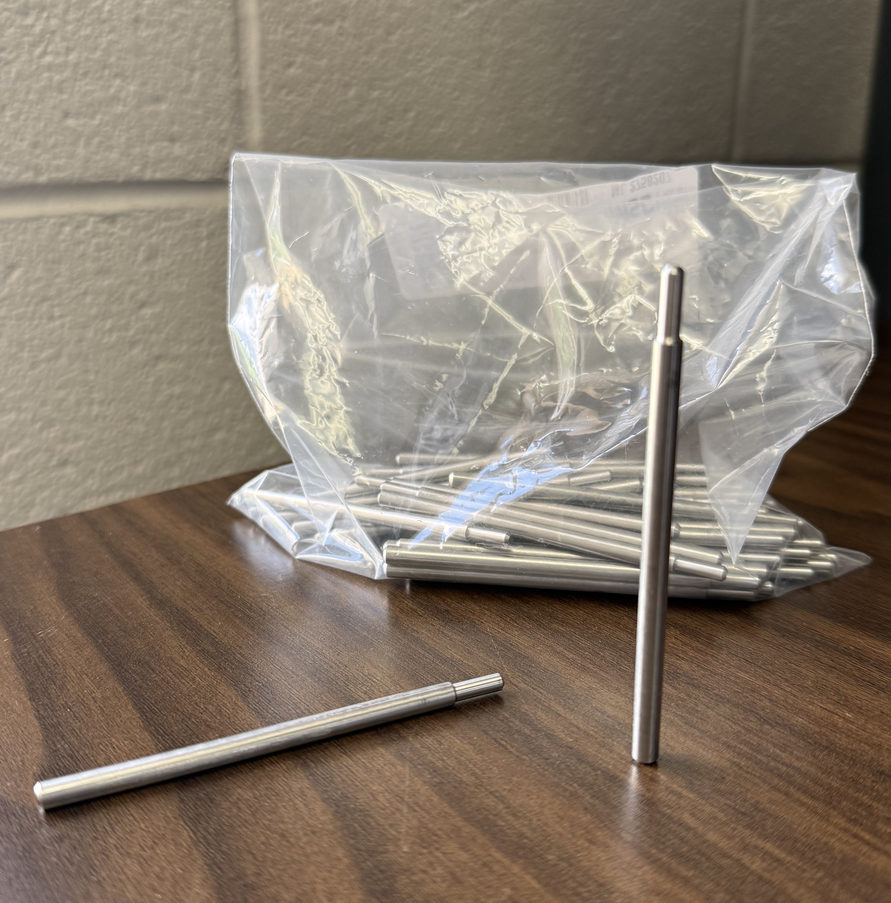
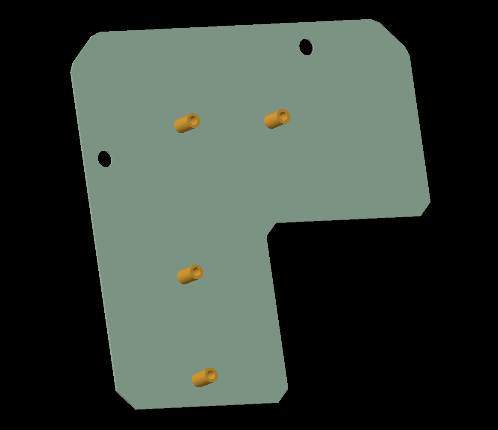

Internship Assignments
Totalizer Support Tool
This was an 11-week design project focused on resolving a field failure involving several dispensers.
Several boss towers on multiple bezel doors were found to be either severely cracked or completely broken off. These towers were originally designed to
secure a bracket that held totalizers to the bezel.
I was tasked with designing a fixture to replace the failed boss towers and securely hold the bracket in place.
I designed the part in Creo and printed it with ABS plastic. After several design reviews with my team, I presented my tool to the customer who
was experiencing this issue and got their approval for their use in the field. Lastly, I created a service document to instruct the field engineers on
assembling the support tool to the bezel door.
Skills learned/used: Design for Assembly (DFA); Customer communication; Project ownership/time management; Assembly instruction (Service) documentation


Guide Pin
I re-engineered a guide pin used in the assembly of dispenser meters.
Skills learned/used: Use of metrology tools

Reliability Testing Fixture
I worked with the electrical engineering team to design a portion of the their testing set up. Using Creo,
I designed two sheet metal assemblies that would help to hold up the electrical wiring in testing.
Skills learned/used: Cross-functional communication; Sheet metal design
